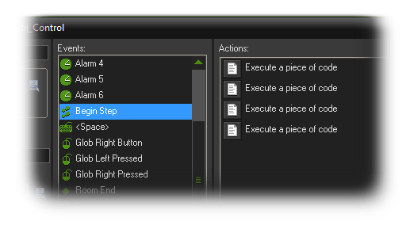

Comments in Code 代码注释
本节讨论你可以注释你的代码和脚本的方式。
当工作与他人合作,当处理一个大的项目,甚至只是为了你自己的参考和调试,留下注释在你的代码和脚本是非常重要的。在GMS你有各种机制来帮你注释
代码部分甚至整个代码块,可以在事件列表中看到的对象你当前正在编辑,这样你可以把笔记留给你自己和你的同事,或者解释一个特别棘手的代码片段,或甚至只
是离开一个提醒什么的事情。
你首先能做的就是离开时做一个简短的注释使用/ /在文本前。例如：
//initialise variables
sr = 10;
hp = 100;
你也可以把多行注释,省略一个完整的部分代码进行调试,甚至解释参数的脚本。因为你可以使用/ *……* /:
/*
usage:
diff = angle_difference(angle1,angle2);
angle1 first direction in degrees, real
angle2 second direction in degrees, real
returns: difference of the given angles in degrees, -180 to 180
GMLscripts.com
*/
{
return ((((argument0 - argument1) mod 360) + 540) mod 360) - 180;
}
最后,当使用代码块在一个对象,它可以是非常令人困惑,特别是如果你有许多的他们,任何给定的事件最终可能看起来像这个:
但是如果第一行代码有注释,在开始/ / /那注释那代码块的名字。所以例如如果你有这个 :
///Check position
然后代码块将现在有名字,随着它的描述,如下图所示：

- 碧绿的湖 -